في هذا الدرس سنتعرّف على خمس أيقونات تستخدمها في كل مرة تكتب فيها مستندًا. هذه الأيقونات بسيطة جدًا، وبمجرد ما تحفظها في ذهنك، راح تكتب بسرعة وثقة أكبر.
حفظ (Save)
هذه الأيقونة تحفظ كل ما كتبته في المستند، حتى لا تفقد عملك إذا أغلقت البرنامج أو انقطعت الكهرباء.
مثال: كتبت فقرة عن رحلتك الأخيرة؟ اضغط على أيقونة الحفظ فورًا حتى لا تضيع.

تراجع (Undo)
أخطأت بالكتابة أو حذفت شيئًا بالغلط؟ هذه الأيقونة "ترجع بالزمن" وتلغي آخر شيء فعلته.
مثال: حذفت جملة بالخطأ؟ اضغط على أيقونة التراجع وترجع الجملة فورًا.
قص (Cut)
تأخذ نصًا محددًا من مكانه وتحذفه، لكنها تحتفظ به مؤقتًا حتى تضعه بمكان آخر.
مثال: كتبت جملة بمكان غلط؟ حددها، اضغط "قص"، ثم اذهب للمكان الصحيح والصقها.
نسخ (Copy)
تأخذ نصًا محددًا وتكرره، لكنها لا تحذف النص الأصلي من مكانه.
مثال: تبي تكرر عنوانك بأكثر من مكان بالمستند؟ حدده، اضغط "نسخ"، والصقه بأي مكان تحب.
لصق (Paste)
تضع النص الذي قصصته أو نسخته بالمكان الذي يومض فيه المؤشر.
مثال: بعد ما تنسخ أو تقص جملة، اضغط بمكان جديد ثم اضغط "لصق" لتظهر هناك.
هل تعلم؟
تقدر تستخدم اختصارات لوحة المفاتيح بدل الضغط بالفأرة: Ctrl+S للحفظ، Ctrl+Z للتراجع، Ctrl+X للقص، Ctrl+C للنسخ، Ctrl+V للصق.